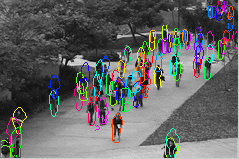
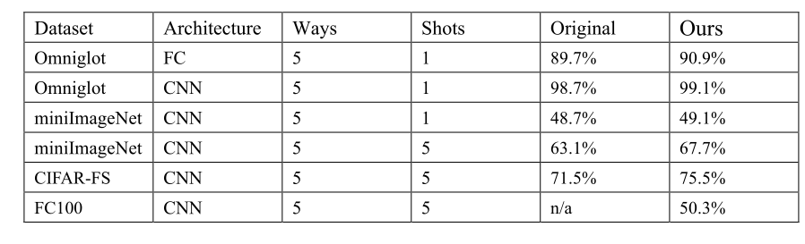
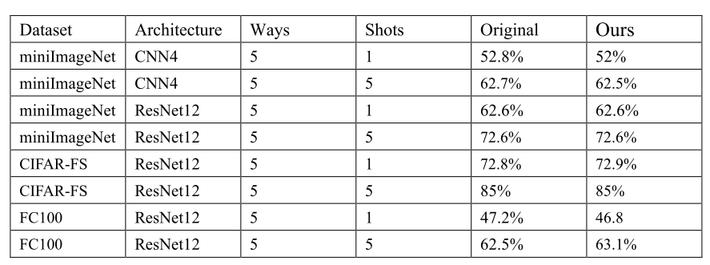
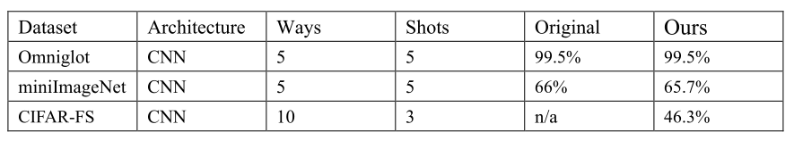
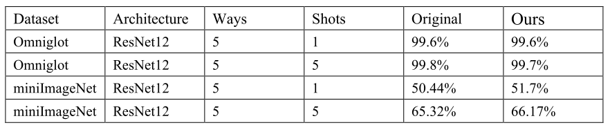
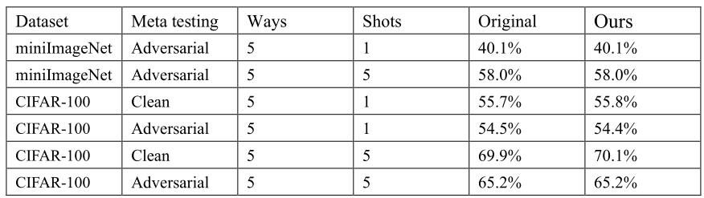

Computer Vision
This directory contains meta-learning examples and reproductions for common computer vision benchmarks.


Results (Our Awesome-META+)
MAML

MetaOptNet

Reptile

Prototypical network


Relation Network

ANIL

Example (Usage)
MAML
The following files reproduce MAML on the Omniglot and mini-ImageNet datasets.
The FOMAML results can be obtained by setting first_order=True in the MAML wrapper.
On Omniglot, the CNN results can be obtained by swapping OmniglotFC with OmniglotCNN.
maml_omniglot.py- MAML on the Omniglot dataset with a fully-connected network.maml_miniimagenet.py- MAML on the mini-ImageNet dataset with the standard convolutional network.maml_cifar.py- MAML on the Cifar-FS dataset with the standard convolutional network.
Note that the original MAML paper trains with 5 fast adaptation step, but tests with 10 steps. This implementation only provides the training code.
Usage
Manually edit the respective files and run:
python examples/maml_omniglot.py
or
python examples/maml_miniimagenet.py
or
python examples/maml_cifar.py
Prototypical Networks
The file protonet_miniimagenet.py reproduces Prototypical Networks on the mini-ImageNet dataset.
This implementation provides training and testing code.
Usage
For 1 shot 5 ways:
python examples/protonet_miniimagenet.py
For 5 shot 5 ways:
python examples/protonet_miniimagenet.py --shot 5 --train-way 5
For 1 shot 20 ways:
python examples/protonet_miniimagenet.py --shot 1 --train-way 20
For 5 shot 20 ways:
python examples/vision/protonet_miniimagenet.py --shot 5 --train-way 20
Reptile
Usage
Manually edit the above file and run:
python examples/vision/reptile_miniimagenet.py
ANIL
The file anil_fc100.py and anil_cifar.py implements ANIL on the FC100 and Cifar-FS dataset.
Usage
Manually edit the above file and run:
python examples/vision/anil_fc100.py
or
python examples/vision/anil_cifar.py
General situation
The pretrained weights can be downloaded using ./models/.
For example
LinearBlock
class LinearBlock(torch.nn.Module):
def __init__(self, input_size, output_size):
super(LinearBlock, self).__init__()
self.relu = torch.nn.ReLU()
self.normalize = torch.nn.BatchNorm1d(
output_size,
affine=True,
momentum=0.999,
eps=1e-3,
track_running_stats=False,
)
self.linear = torch.nn.Linear(input_size, output_size)
fc_init_(self.linear)
def forward(self, x):
x = self.linear(x)
x = self.normalize(x)
x = self.relu(x)
return x
class ConvBlock(torch.nn.Module):
def __init__(self,
in_channels,
out_channels,
kernel_size,
max_pool=True,
max_pool_factor=1.0):
super(ConvBlock, self).__init__()
stride = (int(2 * max_pool_factor), int(2 * max_pool_factor))
if max_pool:
self.max_pool = torch.nn.MaxPool2d(
kernel_size=stride,
stride=stride,
ceil_mode=False,
)
stride = (1, 1)
else:
self.max_pool = lambda x: x
self.normalize = torch.nn.BatchNorm2d(
out_channels,
affine=True,
# eps=1e-3,
# momentum=0.999,
# track_running_stats=False,
)
torch.nn.init.uniform_(self.normalize.weight)
self.relu = torch.nn.ReLU()
self.conv = torch.nn.Conv2d(
in_channels,
out_channels,
kernel_size,
stride=stride,
padding=1,
bias=True,
)
maml_init_(self.conv)
def forward(self, x):
x = self.conv(x)
x = self.normalize(x)
x = self.relu(x)
x = self.max_pool(x)
return x
CNN4
class CNN4(torch.nn.Module):
def __init__(
self,
output_size,
hidden_size=64,
layers=4,
channels=3,
max_pool=True,
embedding_size=None,
):
super(CNN4, self).__init__()
if embedding_size is None:
embedding_size = 25 * hidden_size
self.features = CNN4Backbone(
hidden_size=hidden_size,
channels=channels,
max_pool=max_pool,
layers=layers,
max_pool_factor=4 // layers,
)
self.classifier = torch.nn.Linear(
embedding_size,
output_size,
bias=True,
)
maml_init_(self.classifier)
self.hidden_size = hidden_size
def forward(self, x):
x = self.features(x)
x = self.classifier(x)
return x
ResNet12
class ResNet12(torch.nn.Module):
def __init__(
self,
avg_pool=True, # Set to False for 16000-dim embeddings
wider=True, # True mimics MetaOptNet, False mimics TADAM
embedding_dropout=0.0, # dropout for embedding
dropblock_dropout=0.1, # dropout for residual layers
dropblock_size=5,
channels=3,
):
super(ResNet12Backbone, self).__init__()
self.inplanes = channels
block = BasicBlock
if wider:
num_filters = [64, 160, 320, 640]
else:
num_filters = [64, 128, 256, 512]
self.layer1 = self._make_layer(
block,
num_filters[0],
stride=2,
dropblock_dropout=dropblock_dropout,
)
self.layer2 = self._make_layer(
block,
num_filters[1],
stride=2,
dropblock_dropout=dropblock_dropout,
)
self.layer3 = self._make_layer(
block,
num_filters[2],
stride=2,
dropblock_dropout=dropblock_dropout,
drop_block=True,
block_size=dropblock_size,
)
self.layer4 = self._make_layer(
block,
num_filters[3],
stride=2,
dropblock_dropout=dropblock_dropout,
drop_block=True,
block_size=dropblock_size,
)
self.avgpool = nn.AvgPool2d(5, stride=1)
self.embedding_dropout = embedding_dropout
self.keep_avg_pool = avg_pool
self.dropout = nn.Dropout(p=self.embedding_dropout, inplace=False)
self.dropblock_dropout = dropblock_dropout
for m in self.modules():
if isinstance(m, nn.Conv2d):
nn.init.kaiming_normal_(
m.weight,
mode='fan_out',
nonlinearity='leaky_relu',
)
elif isinstance(m, nn.BatchNorm2d):
nn.init.constant_(m.weight, 1)
nn.init.constant_(m.bias, 0)
def _make_layer(
self,
block,
planes,
stride=1,
dropblock_dropout=0.0,
drop_block=False,
block_size=1,
):
downsample = None
if stride != 1 or self.inplanes != planes * block.expansion:
downsample = nn.Sequential(
nn.Conv2d(self.inplanes, planes * block.expansion,
kernel_size=1, stride=1, bias=False),
nn.BatchNorm2d(planes * block.expansion),
)
layers = []
layers.append(block(
self.inplanes,
planes,
stride,
downsample,
dropblock_dropout,
drop_block,
block_size)
)
self.inplanes = planes * block.expansion
return nn.Sequential(*layers)
def forward(self, x):
x = self.layer1(x)
x = self.layer2(x)
x = self.layer3(x)
x = self.layer4(x)
x = self.avgpool(x)
x = self.flatten(x)
x = self.dropout(x)
return x
for more details, please see: https://github.com/WangJingyao07/MetaLearning-Lab